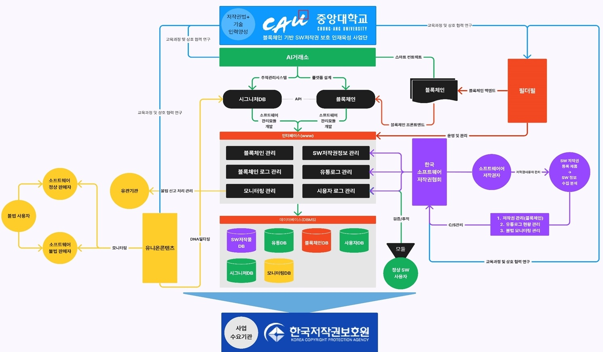

사업소개
블록체인 기술을 활용하여 신뢰 기반의 추적관리 시스템을 제공합니다.
다양한 산업의 공급망 투명성과 안전성을 확보합니다.

플랫폼 서비스
플랫폼의 주요 기능을 통해 데이터의 신뢰성을 보장합니다.
실시간 추적과 사용자 맞춤형 리포트를 제공합니다.
블록체인 서비스
블록체인 기술을 활용하여 데이터의 투명성과 신뢰성을 보장하며 다양한 산업에서 활용 가능한 솔루션을 제공합니다.
SW 추적관리 서비스
소프트웨어 개발 및 배포 과정에서의 변경 사항을 추적하고 관리하여 품질과 신뢰성을 향상시킵니다.
유통 모니터링 서비스
유통 과정에서의 제품 이동과 상태를 실시간으로 모니터링하여 공급망의 투명성을 확보합니다.
연구자료
블록체인 기반 시스템의 개념과 설계를 다룬 자료입니다.
다양한 사례와 기술 문서를 제공합니다.
자주 묻는 질문
블록체인 기반 시스템에 대한 주요 질문과 답변을 제공합니다.
시스템의 활용성과 이점을 확인하세요.
블록체인을 활용하여 제품 또는 데이터의 이동과 변경 사항을 투명하게 기록하고 검증할 수 있는 시스템입니다.
농식품, 의약품, 유통, 제조 등 공급망 추적이 중요한 다양한 산업에 적용할 수 있습니다.
데이터의 신뢰도 향상, 위변조 방지, 투명한 공급망 관리 등을 통해 브랜드 신뢰도와 소비자 만족도를 높일 수 있습니다.